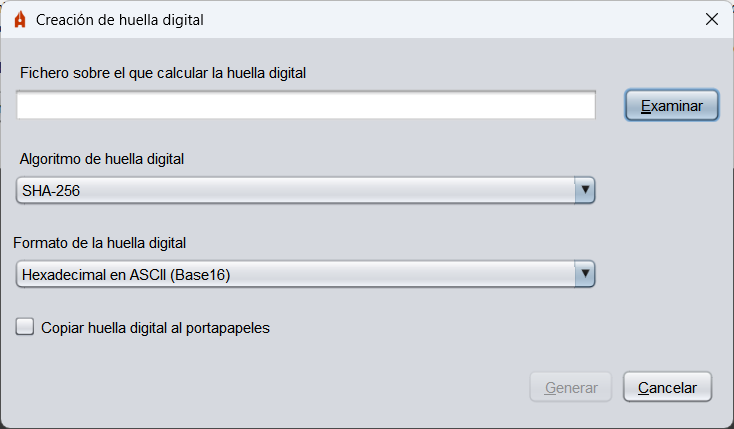
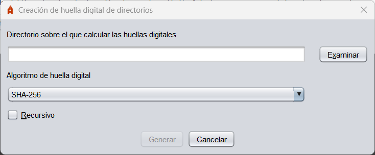

Pluginak
Autofirmarekin batera, plugin-multzo bat banatzen da, aplikazioari funtzio gehigarriak eransteko.
Aztarna digitalak kalkulatzea eta egiaztatzea
Plugin horrek fitxategi baten edo direktorio bateko fitxategi guztien aztarna digitala (hash) kalkulatzeko aukerak gehitzen dizkio Autofirmari, eta sortu diren aztarna horiek egiaztatzeko aukera ematen du.
Plugina instalatutakoan, Autofirmaren menu-barran "Aztarna digitalak" aukera agertuko da egin daitezkeen eragiketa guztiekin.
- Aztarna digitala kalkulatu: Fitxategi baten hash-a kalkulatzeko eta diskora gordetzeko aukera ematen du. Hash fitxategiaren formatua eta luzapena aldatu egingo dira hautatutako formatuaren arabera.

- Aztarna digitala kalkulatzeko fitxategia: hash-a kalkulatu nahi dugun fitxategia.
- Hatz-markaren algoritmoa: Hash-algoritmoa.
- Hatz-marka digitalaren formatua: Hash-a gordetzeko erabilitako kodea:
- Hamaseitarra ASCIIn (Base16): H-tan neurtutako kate hamaseitar gisa biltegiratuko da aztarna.
- 64. oinarria: Aztarna 64. oinarrian gordeko da.
- Bitarra: Hatz-marka kodifikatu gabe biltegiratuko da.
- Kopiatu aztarna digitala arbelean: Aukera hau aktibatzean, hash-a fitxategian gordetzeaz gain, arbelean kopiatuko da. Hash-a hautatutako formatuaren kodifikazioarekin kopiatuko da, edo, formatu bitarra hautatuz gero, formatu hamaseitarrean.
- Aztarna digitala egiaztatzea: Fitxategi baten hash-a egiaztatzeko balio du.

- Datuen fitxategia: Egiaztatu nahi den aztarna digitalari dagokion fitxategia.
- Hatz-marka digitala duen fitxategia: hatz-marka digitala duen fitxategia.
- Aztarna digitala direktorioan kalkulatzea: Direktorio bateko fitxategien hash-a kalkulatzeko balio du.

- Aztarna digitalak kalkulatzeko direktorioa: Aztarna digitala kalkulatzeko erabili nahi ditugun fitxategien direktorioa.
- Hatz-markaren algoritmoa: Hash-algoritmoa.
- Errekurtsiboa: Aktibatzean, hautatutako direktorioko azpidirektorioetan dauden fitxategien hash-a ere kalkulatuko da.
- Egiaztatu aztarna digitala direktorioan: Direktorio bateko fitxategien hash-a egiaztatzeko aukera ematen du.

- Direktorioa: Egiaztatu nahi diren hatz-markak zein fitxategiri dagozkion adierazten duen direktorioa.
- Hatz-aztarnen fitxategia: Egiaztatuko diren aztarna digitalen fitxategia.
Windows sistemetan aztarna digitalen plugina instalatzean, aztarna digitalak sortzeko eta egiaztatzeko aukerak gehitzen dira sistemako fitxategi eta direktorioen laster-menuan.
Aukera hauek agertzen dira:
- Hatz-marka digitala sortzea: Aukera hau fitxategi eta direktorio guztien laster-menuan agertzen da, eta fitxategiaren edo direktorioko fitxategien hash-a sortzeko aukera ematen du.
- Aztarna digitala egiaztatzea: Aukera hau hashes-en fitxategien laster-menuan agertzen da (.hash, .hashb64, .hashfiles eta .hexhash), eta aukera ematen du hash-a zein fitxategi edo direktoriotatik egiaztatu nahi den hautatzeko.